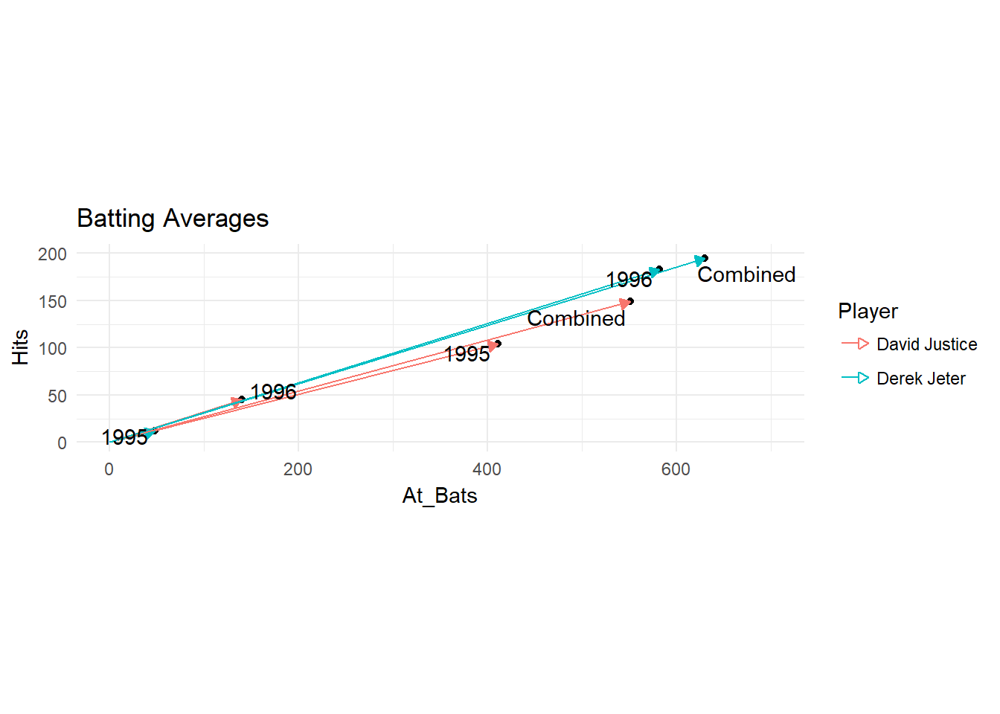
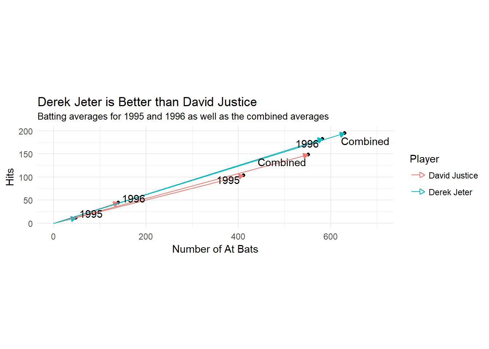
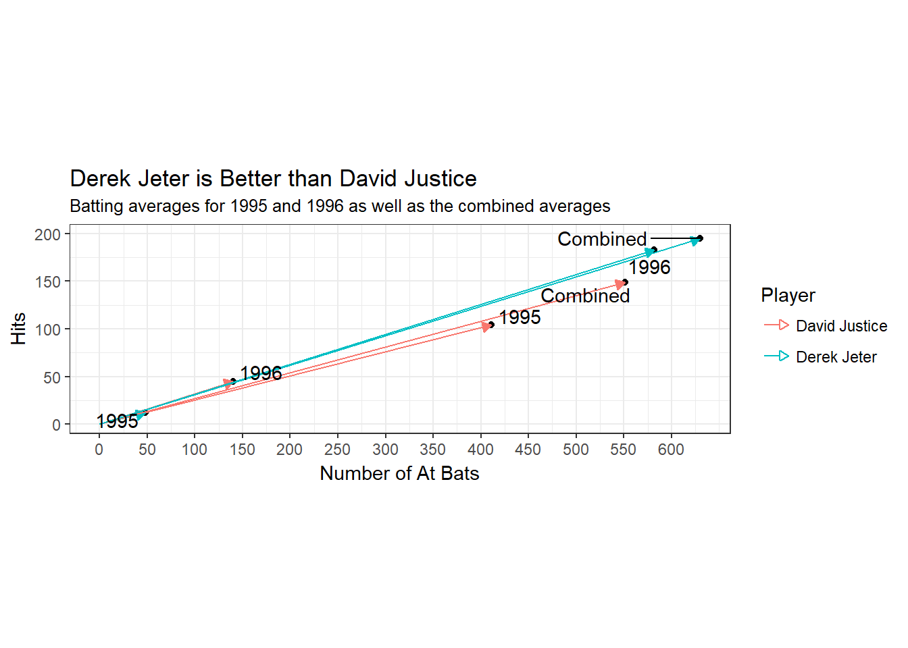
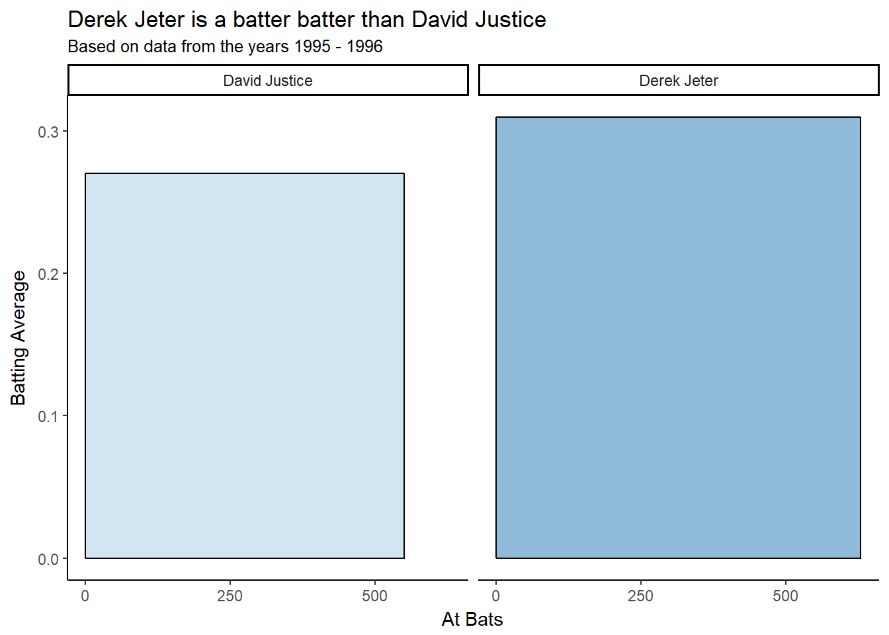

1.6 Final Product
The fourth phase of the analysis is the creation of a knowledge product. In this case the reader(s) will be varied. It is important to think about graphic design elements such as color, labels, font. The key point is to clearly define the message and then use the graphic elements to support this message.
1.6.1 Discussion Ideas
What is the key message? What is the best method to communicate this message? Should we use a static graphic or an interactive display?
1.6.2 First Knowledge Product
We think the key message is that Derek Jeter is the better batter than David Justice. We will use a static visual since interactive tools currently require access to the internet of special software. Before coming up with our final knowledge product we will discuss ideas using our vector plot from Figure 1.6, reproduced below.
plotdata %>%
ggplot(aes(x=At_Bats,y=Hits)) +
geom_point() +
xlim(0,700)+
ylim(0,200)+
coord_fixed(ratio=1) +
geom_segment(aes(x = 0, y = 0, xend = At_Bats, yend = Hits,color=Player),arrow=arrow(length=unit(.2,'cm'),type="closed")) +
geom_text_repel(aes(x=At_Bats,y=Hits, label = Year)) +
labs(title="Batting Averages")
First let’s change the theme to reduce the background color.
plotdata %>%
ggplot(aes(x=At_Bats,y=Hits)) +
geom_point() +
xlim(0,700)+
ylim(0,200)+
coord_fixed(ratio=1) +
geom_segment(aes(x = 0, y = 0, xend = At_Bats, yend = Hits,color=Player),arrow=arrow(length=unit(.2,'cm'),type="closed")) +
geom_text_repel(aes(x=At_Bats,y=Hits, label = Year)) +
labs(title="Batting Averages")+
theme_minimal()
Now let’s improve the labels.
plotdata %>%
ggplot(aes(x=At_Bats,y=Hits)) +
geom_point() +
xlim(0,700)+
ylim(0,200)+
coord_fixed(ratio=1) +
geom_segment(aes(x = 0, y = 0, xend = At_Bats, yend = Hits,color=Player),arrow=arrow(length=unit(.2,'cm'),type="closed")) +
geom_text_repel(aes(x=At_Bats,y=Hits, label = Year)) +
labs(title="Derek Jeter is Better than David Justice",x="Number of At Bats",y="Hits",
subtitle="Batting averages for 1995 and 1996 as well as the combined averages")+
theme_minimal()
Finally, let’s change the ticks on the axes and a different theme.
plotdata %>%
ggplot(aes(x=At_Bats,y=Hits)) +
geom_point() +
ylim(0,200)+
coord_fixed(ratio=1) +
geom_segment(aes(x = 0, y = 0, xend = At_Bats, yend = Hits,color=Player),arrow=arrow(length=unit(.2,'cm'),type="closed")) +
geom_text_repel(aes(x=At_Bats,y=Hits, label = Year)) +
labs(title="Derek Jeter is Better than David Justice",x="Number of At Bats",y="Hits",
subtitle="Batting averages for 1995 and 1996 as well as the combined averages")+
theme_bw() +
scale_x_continuous(breaks=seq(0,600,50))1.6.3 Discussion Ideas
What do you like and dislike about the latest visual? Does it accomplish it goal of showing Derek Jeter is the better batter? What would you change?
1.6.4 Second Knowledge Product
d=data.frame(x1=c(0,0), y2=c(0.3095,0.2704), y1=c(0,0), x2=c(.630,0.551), Player=c('Derek Jeter','David Justice'), r=c(630,551))
ggplot(d) +
geom_rect(aes(xmin=x1, xmax=x2, ymin=y1, ymax=y2, fill=Player), color="black", alpha=0.5) +
theme_classic() +
scale_fill_brewer(palette="Paired") +
facet_grid(. ~ Player) +
scale_x_continuous(name="At Bats") +
scale_y_continuous(name="Batting Average") +
#geom_text(data=d, aes(x=x1+(x2-x1)/2, y=y1+(y2-y1)/2, label=r), size=4) +
labs(title="Derek Jeter is a batter batter than David Justice",
subtitle="Based on data from the years 1995 - 1996") +
geom_text(aes(x=x1+(x2-x1)/2, y=y1-0.01, label=r)) +
theme(axis.text.x = element_blank(),axis.ticks.x = element_blank(),legend.position = "none")
d=data.frame(x1=c(0,0), y2=c(0.3095,0.2704), y1=c(0,0), x2=c(.630,0.551), Player=c('Derek Jeter','David Justice'), r=c(630,551))
ggplot(d) +
geom_rect(aes(xmin=x1, xmax=x2, ymin=y1, ymax=y2, fill=Player), color="black", alpha=0.5) +
theme_classic() +
scale_fill_brewer(palette="Paired") +
facet_grid(. ~ Player) +
scale_x_continuous(name="At Bats",breaks=c(0,.25,.5,.75),labels=c("0", "250", "500","750")) +
scale_y_continuous(name="Batting Average") +
labs(title="Derek Jeter is a batter batter than David Justice",
subtitle="Based on data from the years 1995 - 1996") +
theme(legend.position = "none")1.6.5 Web Resources
The following are some resource
https://www.r-bloggers.com/r-how-to-layout-and-design-an-infographic/
http://nandeshwar.info/data-visualization/how-to-create-infographics-in-r/